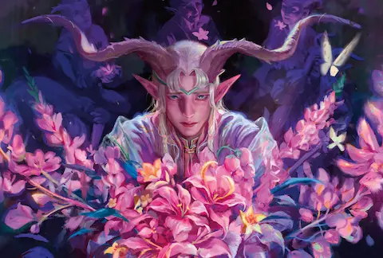

Para quienes empezamos en Magic por la era clásica —Ice Age, Chronicles, Tempest—, Lorwyn siempre tuvo un aura especial. Un plano de luz perpetua, sin noche, habitado por criaturas de cuento que escondÃan algo mucho más oscuro bajo su apariencia idÃlica. El set original de 2007 fue una bocanada de aire fresco en el juego, y ahora después de dieciocho años, vuelve transformado.
Lorwyn Eclipsed llega con la promesa de explorar qué le ocurrió a ese plano de eterna tarde dorada. El nombre ya lo dice todo: algo ha eclipsado la luz que definÃa a Lorwyn. Los trailers y el arte filtrado muestran un mundo cambiado, con las facciones originales irreconocibles. Wizards juega bien sus cartas —nunca mejor dicho— dosificando el lore y dejando más preguntas que respuestas.
Y por si fuera poco, 2026 viene cargadÃsimo para MTG: después de Lorwyn Eclipsed, llegan sets de Tortugas Ninja, Marvel Super Heroes, El Hobbit y Star Trek antes de fin de año. Si en los 90 te parecÃa que habÃa demasiados sets con Chronicles y Fallen Empires... querido lector, aún no conoces la verdadera abundancia. Que fluya el maná.